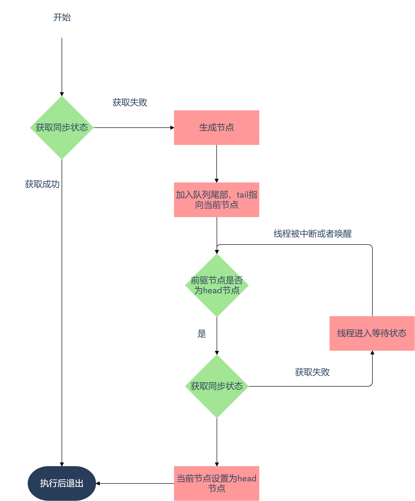

/** * 设置state,final修饰防止子类修改 */ protectedfinalvoidsetState(int newState){ state = newState; }
/** * CAS设置state */ protectedfinalbooleancompareAndSetState(int expect, int update){ // See below for intrinsics setup to support this return unsafe.compareAndSwapInt(this, stateOffset, expect, update); }
privatevoidcancelAcquire(Node node){ // Ignore if node doesn't exist if (node == null) return;
node.thread = null;
// Skip cancelled predecessors Node pred = node.prev; while (pred.waitStatus > 0) node.prev = pred = pred.prev; Node predNext = pred.next;
node.waitStatus = Node.CANCELLED;
// If we are the tail, remove ourselves. if (node == tail && compareAndSetTail(node, pred)) { compareAndSetNext(pred, predNext, null); } else { //当满足下面三个条件，将pred的next指向node的下一节点： //1.pred不是head节点：如果pred为头节点，而node又被cancel,则node.next为等待队列中的第一个节点，需要unpark唤醒 //2.pred节点状态为SIGNAL或能更新为SIGNAL //3.pred的thread变量不能为null int ws; if (pred != head && ((ws = pred.waitStatus) == Node.SIGNAL || (ws <= 0 && compareAndSetWaitStatus(pred, ws, Node.SIGNAL))) && pred.thread != null) { Node next = node.next; if (next != null && next.waitStatus <= 0) compareAndSetNext(pred, predNext, next); } else { unparkSuccessor(node); }
node.next = node; // help GC } }
privatevoidunparkSuccessor(Node node){ int ws = node.waitStatus; if (ws < 0) compareAndSetWaitStatus(node, ws, 0); //如果节点为空或者被取消了，则从队列尾部开始查找，找到离node最近的非null且状态正常的节点 Node s = node.next; if (s == null || s.waitStatus > 0) { s = null; for (Node t = tail; t != null && t != node; t = t.prev) if (t.waitStatus <= 0) s = t; } //取出找到节点的线程对象，通过unpark唤醒; if (s != null) LockSupport.unpark(s.thread); }
小结一下：

独占式释放锁
publicfinalbooleanrelease(int arg){ //tryRelease方法由子类覆写 if (tryRelease(arg)) { Node h = head; if (h != null && h.waitStatus != 0) //唤醒第一个等待的节点 unparkSuccessor(h); returntrue; } returnfalse; }
共享式获取锁
publicfinalvoidacquireShared(int arg){ //tryAcquireShared由字类覆写 if (tryAcquireShared(arg) < 0) doAcquireShared(arg); }
//是不是感觉和独占式很像 privatevoiddoAcquireShared(int arg){ //创建节点加入队列 final Node node = addWaiter(Node.SHARED); boolean failed = true; try { boolean interrupted = false; for (;;) { final Node p = node.predecessor(); if (p == head) { //如果是第一个等待节点，则尝试获取锁 int r = tryAcquireShared(arg); //r表示获取资源状态，-1表示失败，0表示没有剩余资源无法传播，1表示可以传播 if (r >= 0) { //设置head节点，检查下一个节点是否是共享模式，如果是则向下传播 setHeadAndPropagate(node, r); p.next = null; // help GC if (interrupted) selfInterrupt(); failed = false; return; } } if (shouldParkAfterFailedAcquire(p, node) && parkAndCheckInterrupt()) interrupted = true; } } finally { if (failed) cancelAcquire(node); } }
privatevoidsetHeadAndPropagate(Node node, int propagate){ Node h = head; // Record old head for check below setHead(node); if (propagate > 0 || h == null || h.waitStatus < 0 || (h = head) == null || h.waitStatus < 0) { Node s = node.next;
if (s == null || s.isShared()) //后继节点是共享模式，则唤醒 doReleaseShared();
privatevoiddoReleaseShared(){ for (;;) { Node h = head; if (h != null && h != tail) { int ws = h.waitStatus; if (ws == Node.SIGNAL) { //如果head状态为 SIGNAL, 修改状态为0并唤醒后继节点，否则先修改为SIGNAL if (!compareAndSetWaitStatus(h, Node.SIGNAL, 0)) continue; unparkSuccessor(h); } //如果状态为0，则修改状态为 PROPAGATE elseif (ws == 0 && !compareAndSetWaitStatus(h, 0, Node.PROPAGATE)) continue; // loop on failed CAS } if (h == head) // loop if head changed break; } }
共享式释放锁
publicfinalbooleanreleaseShared(int arg){ if (tryReleaseShared(arg)) { doReleaseShared(); returntrue; } returnfalse; }
protectedfinalbooleantryReleaseShared(int unused){ Thread current = Thread.currentThread(); if (firstReader == current) { // assert firstReaderHoldCount > 0; if (firstReaderHoldCount == 1) firstReader = null; else firstReaderHoldCount--; } else { //获取holdCounter HoldCounter rh = cachedHoldCounter; if (rh == null || rh.tid != getThreadId(current)) rh = readHolds.get(); int count = rh.count; if (count <= 1) { readHolds.remove(); if (count <= 0) //防止lock()一次，unlock()多次 throw unmatchedUnlockException(); } --rh.count; } //修改状态值 for (;;) { int c = getState(); int nextc = c - SHARED_UNIT; if (compareAndSetState(c, nextc)) // 如果state是0，返回true帮助唤醒后继节点 return nextc == 0; } }
写锁的获取与释放
获取
protectedfinalbooleantryAcquire(int acquires){ Thread current = Thread.currentThread(); int c = getState(); int w = exclusiveCount(c); if (c != 0) { // 读锁不为0或者写锁线程不为自己 if (w == 0 || current != getExclusiveOwnerThread()) returnfalse; if (w + exclusiveCount(acquires) > MAX_COUNT) thrownew Error("Maximum lock count exceeded"); // 重入锁 setState(c + acquires); returntrue; } //CAS获取锁 if (writerShouldBlock() || !compareAndSetState(c, c + acquires)) returnfalse; setExclusiveOwnerThread(current); returntrue; }
释放
protectedfinalbooleantryRelease(int releases){ if (!isHeldExclusively()) thrownew IllegalMonitorStateException(); //state -1 int nextc = getState() - releases; boolean free = exclusiveCount(nextc) == 0; if (free) setExclusiveOwnerThread(null); setState(nextc); return free; }